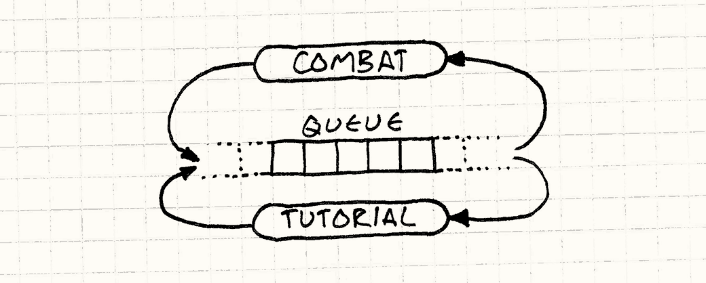
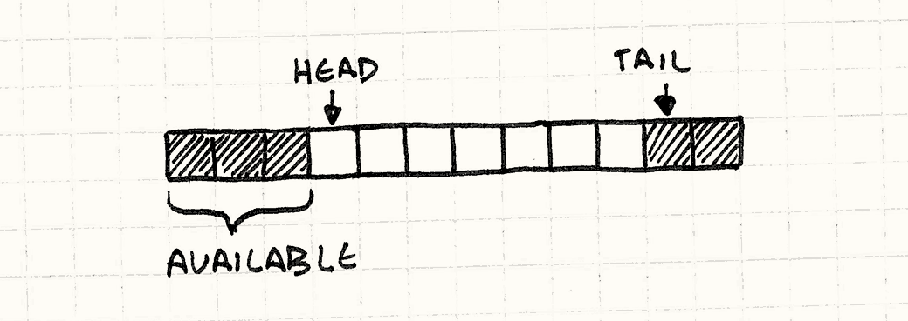
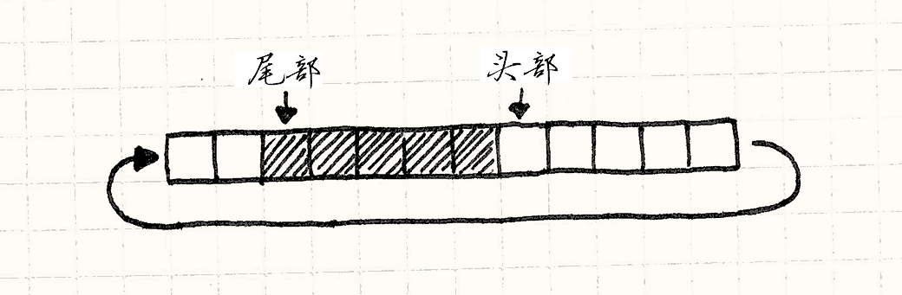

Event Queue
Game Programming PatternsDecoupling Patterns
意图
解耦消息或事件发出的时间和处理它的时间。
动机
除非你还呆在一两个没有互联网接入的犄角旮旯，你可能已经听说过“事件序列”了。 如果没有，也许“消息队列”或“事件循环”或“消息泵”可以让你想起些什么。 为了更新你的记忆，让我们了解几个此模式的常用表示。
GUI事件循环
如果你曾做过任何用户界面编程，你就会很熟悉事件。 每当用户与你的程序交互——点击按钮，拉出菜单，或者按个键——操作系统就会生成一个事件。 它会将这个对象扔给你的应用，你的工作就是抓住它然后挂上一些有趣的行为。
为了收这些信件，代码的深处是一个事件循环。它大体上是这样的：
while (running) { Event event = getNextEvent(); // Handle event... }
对getNextEvent()调用将一堆未处理的用户输出传到你的应用中。
你将它导向一个事件处理器，之后，魔术般，应用获得了生命。
有趣的部分是应用在它想要的时候获取事件。
操作系统在用户接触外部代码时不是直接跳转到你应用的某处代码。
这就意味着当用户输入进来时，它需要去某处，这样操作系统在设备驱动报告输入和你应用去调用getNextEvent()之间不会丢失它。
这个“某处”是一个队列。

当用户输入抵达时，操作系统将其添加到未处理事件的队列中。
当你调用getNextEvent()时，他从队列中获取最老的事件然后交给你的应用。
中心事件总线
大多数游戏不是像这样事件驱动的，但是在游戏中使用一个事件循环来支撑中枢系统是很常见的。 你通常听到“中心”“全局”“主体”被用来描述它。 这对于游戏系统想要保持解耦的高层相互交流是很方便的。
假设你的游戏有教程系统在某些特定游戏事件后显示帮助框。 举个例子，当玩家第一次击败了肮脏的动物，你想要展示一个小气泡显示着，“按X拿起战利品！”
你的游戏玩法和战斗代码也许像上面一样复杂。 你最后想做的是检查一堆教程的触发器。 有或者，你可以使用中心事件队列。 任何游戏系统都可以发给它，这样战斗代码可以在你砍掉敌人时发出“敌人死亡”事件。
就像这样，任何游戏系统都能从队列接受事件。 教程引擎在队列中注册自己，然后表明它想要收到“敌人死亡”事件。 用这种方式，敌人死了的消息从战斗系统传到了示例引擎，而不需要这两个系统直接知道对方的存在。

我想过使用这个作为这章其他部分的例子，但是我真的不喜欢这样巨大的全局系统。 事件队列不需要在整个游戏引擎中沟通。在一个类或者领域中就很有用了。
你说什么？
所以，相反，让我们给游戏添加一些声音。 人类主要是视觉动物，但是听觉深深的连接到我们的情感系统和我们的物理感觉空间。 正确模拟的回声可以让黑屏幕感觉是巨大的洞穴，而适时的小提琴慢板可以让你的心弦哼着同样的旋律。
为了获得受伤的声音，我们从最简单的解决方法开始，看看结果如何。 我们会添加一个“声音引擎”，其中有使用标识符和音量就可以播放音乐的API：
class Audio { public: static void playSound(SoundId id, int volume); };
它负责加载合适的声音资源，找到可靠的播放频道，然后启动它。 这章不是关于某个平台真实的音频API，所以我会假设在其他某处魔术般实现了一个。 使用它，我们像这样写了方法：
void Audio::playSound(SoundId id, int volume) { ResourceId resource = loadSound(id); int channel = findOpenChannel(); if (channel == -1) return; startSound(resource, channel, volume); }
我们签入以上代码，加入声音文件，然后在代码中像魔法仙女一样调用playSound()。
举个例子，在我们的UI代码中，我们在选择菜单项变化时播放一点杂音：
class Menu { public: void onSelect(int index) { Audio::playSound(SOUND_BLOOP, VOL_MAX); // Other stuff... } };
这样做了之后，我们注意到当你改变菜单项目时，整个屏幕就会冻住几帧。 我们找到了第一个问题：
- 问题一：API在音频引擎完成处理请求前阻塞了调用者。
我们的playSound()方法是同步的——它在从播放器放出声音前不会返回调用者。
如果声音文件要从光盘上加载，那就得花费一定时间。
与此同时，游戏的其他部分被冻住了。
现在忽视这一点，我们继续。 在AI代码中，我们增加了一个调用，在敌人承受玩家伤害时发出痛苦的低号。 没有什么比在虚拟的生物身上施加痛苦更能温暖玩家心灵的了。
这能行，但是有时玩家打出暴击，他在同一帧可打到两个敌人。 这让游戏同时要播放两遍哀嚎。 如果你知道任何有关音频的事，那么就知道要把两个不同的声音混合在一起，需要加和它们的波形。 当这些是同一波形时，它与一个声音播放两倍响是一样的。这就会刺耳的响。
我们在Boss战中有一个相关的问题，当有一堆小怪跑动制造伤害时。 硬件只能同时播放一定数量的音频。当数量超过限度时，声音就被忽视或者切断了。
为了处理这些问题，我们需要看到声音调用的整体集合，用来整合和排序他们。
不幸的是，我们的音频API独立处理每一个playSound()调用。
看起来这些请求是从针眼穿过，一次一个。
- 问题二：请求无法合并处理。
这个问题与下面的相比似乎只是烦恼。
现在，我们在很多不同的游戏系统中散布了playSound()调用。
但是游戏引擎是在现代多核机器上运行的。
为了使用这些核带来的优势，我们将系统分散在不同线程上——渲染在一个，AI在另一个，诸如此类。
由于我们的API是同步的，它在调用者的线程上运行。 当我们从不同的游戏系统调用时，我们从多个线程同时使用API。 看看示例代码，看到任何线程同步性了吗？我也没看到。
当我们想要一个分离的线程给音频，这个问题就更加严重。 当其他线程都忙于跟随对方和制造事物，它只是傻傻待在那里。
- 问题三：请求在错误的线程上执行。
这个问题是音频引擎调用playSound()意味着，“放下任何东西，现在就播放声音！”立即就是问题。
我们的游戏系统在它们的方便时调用playSound()，但是音频引擎不一定能方便去处理这个请求。
为了解决这点，我们将接受请求和处理请求解耦。
模式
队列在先入先出队列中存储一系列通知或请求。 发送通知将请求放入队列并返回。 请求处理器之后稍晚从队列中处理事项。 这解耦了发送者和接受者，既静态又及时。
何时使用
如果你只是想解耦接受者和发送者，像观察者模式和命令模式都可以用较小的复杂度处理它。 你在你需要解耦某些及时的东西时需要队列。
我用推和拉来考虑。 你有一块代码A需要另一块代码B去做些事情。 对A自然的事情是将请求推给B。
同时，对B自然的处理请求的方式是在它自己方便时将其拉入。 当你在一个的末尾有推模型另一个的末尾有拉模型，你需要在他们间放缓存。 这就是队列提供的而简单的解耦模式没有的。
队里给了代码拉取的控制权——接受者可以延迟处理，合并或者忽视请求。 但队列做这些事是通过将控制权从发送者那里拿走完成的。 所有的发送者能做的就是向队列发送请求然后祈祷。 当发送者需要回复时，队列不是好选择。
记住
不像这书中的其他谦虚的模式，事件队列很复杂，会对游戏架构引起广泛影响。 这就意味着你会努力思考如何——或者要不要——使用一个。
中心事件队列是一个全局变量
这个模式的通常方法是一个大的交换站，每个游戏中的部分都能将消息送过这里。 这是很有用的基础架构，但是有用并不代表好。
这会花费一点时间，但是我们大多数艰难的学到了全局变量是不好的。 当有一小片状态，程序的每部分都能接触到，各种精妙的相关性都会产生。 这个模式将状态包裹在协议中，但是它还是全局的，仍然有它引发的全部危险。
世界的状态可以因你改变
假设一些AI代码在虚拟小怪结束它一生时，将“实体死亡”事件发送到队列中。 这个事件在队列中等待了谁知有多少帧后才排到了前面，得以处理。
同时，昂贵的系统想要追踪英雄的杀敌数，并为他可怕的效率奖励。 它接受每个“实体死亡”事件，然后决定他杀死了何种怪物，以及杀戮的难易程度，最终计算处理合适的奖励值。
这需要游戏世界的多种不同状态。 我们需要死亡的实体看看它的难度。 我们也许要看看他的周围有什么其他的障碍物或者怪物。 但是如果事件没有及时处理，这些东西都会消失。 实体可能被清除，周围的东西也有可能移开。
当你接到事件时，你得小心，不能假设现在的状态反映了事件发生时的世界。 这就意味着队列中的事件比同步系统中的事件需要存储更多数据。 在后者中，通知可以说“某事发生了”然后接受者可以寻找细节。 通过队列，这些短暂的细节必须在事件发送时就被捕获，以方便之后的使用。
会陷于反馈循环中
任何事件系统和消息系统都得担心环路：
- A发送了一个事件
- B接受了然后发送事件作为回应。
- 这个事件恰好是A关注的，所以它收到了。为了回应，它发送了一个事件。
- 回到2.
当消息系统是同步的，你很快就能找到环路——它们溢出了栈并让游戏崩溃。 使用队列，异步地使用栈，即使虚假事件晃来晃去时，游戏仍然可以继续运行。 避免这个的通用方法就是避免在处理事件的代码中发送事件。
示例代码
我们已经看到一些代码了。它不完美，但是有基本的正确功能——公用的API和正确的底层音频调用。 剩下需要做的就是修复它的问题。
首先我们的API是阻塞的。
当代码播放声音时，它不能做任何其他事情，直到playSound()加载完音频然后真正的开始播放。
我们想要推迟这项工作，这样 playSound() 可以很快的返回。
为了达到这一点，我们需要具体化播放声音的请求。
我们需要一个小结构存储发送请求的细节，这样我们晚些时候可以使用：
struct PlayMessage { SoundId id; int volume; };
下面我们需要给Audio一些存储空间来追踪正在进行中的播放消息。
现在，你的算法专家也许会告诉你使用激动人心的数据结构，
比如Fibonacci heap或者skip list或者最起码链表。
但是在实践中，你存储一堆同类事物最好的办法是使用一个平凡无奇的经典数组：
- 没有动态分配。
- 没有记录信息或者指针的内存天花板。
- 缓存友好的连续空间使用。
所以让我们那样做吧：
class Audio { public: static void init() { numPending_ = 0; } // Other stuff... private: static const int MAX_PENDING = 16; static PlayMessage pending_[MAX_PENDING]; static int numPending_; };
我们可以将数组大小设置为最糟的情况。 为了播放声音，我们简单的将新消息插到最后：
void Audio::playSound(SoundId id, int volume) { assert(numPending_ < MAX_PENDING); pending_[numPending_].id = id; pending_[numPending_].volume = volume; numPending_++; }
这让playSound()几乎是立即返回，当然我们仍得播放声音。
那块代码在某处，某处是个update()方法：
class Audio { public: static void update() { for (int i = 0; i < numPending_; i++) { ResourceId resource = loadSound(pending_[i].id); int channel = findOpenChannel(); if (channel == -1) return; startSound(resource, channel, pending_[i].volume); } numPending_ = 0; } // Other stuff... };
现在我们需要从方便的某处调用。 这个“方便”取决于你的游戏。 它也许要从主游戏循环中或者专注于音频的线程中调用。
这可行，但是这假定了我们在对update()的单一调用中可以处理每个声音请求。
如果你做了像在声音资源加载后做异步请求的事情，这就没法工作了。
update()一次处理一个请求，它需要有完成一个后从缓存中再拉出一个请求的能力。
换言之，我们需要一个真实的队列。
环状缓存
这里有很多种方式实现队列，但我最喜欢的是环状缓存。 它保留了数组的很多好东西，同时让我们不断从队列的前方移除事物。
现在，我知道你在想什么。 如果我们从数组的前方移除东西，不是需要将所有剩下的都移动一次吗？这不是很慢吗？
这就是为什么要学习链接列表——你可以从中移除一个节点，而无需移动东西。 好吧，其实你可以用数组实现一个队列而无需移动东西。 我会展示给你看，但是首先预习一些术语：
-
队列的头部是请求读取的地方。头存储是最早发出的请求。
-
尾部是另一种终点。它是数组中下个入队请求要写的地方。注意他是队列的终点的下一个。你可以将其理解为一个半开半闭区间，如果这有帮助的话。
由于 playSound() 向数组的结尾添加了新的请求，头部在元素0上而尾部向右增长。

让我们将其编码。首先，我们显示定义这两个标记在类中的意义：
class Audio { public: static void init() { head_ = 0; tail_ = 0; } // Methods... private: static int head_; static int tail_; // Array... };
在 playSound() 的实现中，numPending_被tail_取代，但是其他都是一样的：
void Audio::playSound(SoundId id, int volume) { assert(tail_ < MAX_PENDING); // Add to the end of the list. pending_[tail_].id = id; pending_[tail_].volume = volume; tail_++; }
更有趣的变化在update()中：
void Audio::update() { // If there are no pending requests, do nothing. if (head_ == tail_) return; ResourceId resource = loadSound(pending_[head_].id); int channel = findOpenChannel(); if (channel == -1) return; startSound(resource, channel, pending_[head_].volume); head_++; }
我们在头部处理，然后通过将头部指针向右移动来消除它。 我们定义头尾之间没有距离为空队列。
现在，我们获得了一个队列——我们可以向尾部添加从前面移除。
这里有很明显的问题。在我们向队列添加请求时，头和尾继续向右移动。
最终tail_碰到了数组的尾部，欢乐时光结束了。
之后是这个方法的灵巧之处。

注意当尾部向后移动时，头部也是如此。 这就意味着我们在数组开始部分的元素再也没有使用了。 所以我们做的就是，当抵达末尾时，将尾部回折到数组的头部。 这就是为什么它被称为环状缓存，他表现的像是一个环状的数组。

实现这个非常简单。 当我们入队一个事物时，我们只需要保证尾部在抵达结束的时候回折到数组的开头：
void Audio::playSound(SoundId id, int volume) { assert((tail_ + 1) % MAX_PENDING != head_); // Add to the end of the list. pending_[tail_].id = id; pending_[tail_].volume = volume; tail_ = (tail_ + 1) % MAX_PENDING; }
替代tail++为一个以数组长度的模的增量将尾部回折回来。
另一个改变是断言。我们得保证队列不会溢出。
只要这里有少于MAX_PENDING的请求在队列中，在头和尾之间就有没有使用的间隔。
如果队列满了，这些都不会有了，就像古怪的衔尾蛇一样，尾部会遇到头部然后复写它。
断言保证了这点不会发生。
在update()中，我们也回折了头：
void Audio::update() { // If there are no pending requests, do nothing. if (head_ == tail_) return; ResourceId resource = loadSound(pending_[head_].id); int channel = findOpenChannel(); if (channel == -1) return; startSound(resource, channel, pending_[head_].volume); head_ = (head_ + 1) % MAX_PENDING; }
这样就好——一个没有动态分配，没有数据拷贝，缓存友好的简单数组实现的队列完成了。
合并请求
现在有队列了，我们可以解决其他问题了。 首先是多重请求播放同一音频最终会让其播放的太响了。 由于我们知道哪些请求在等待处理，需要做的所有事情就是将请求和早先处理的同一请求合并：
void Audio::playSound(SoundId id, int volume) { // Walk the pending requests. for (int i = head_; i != tail_; i = (i + 1) % MAX_PENDING) { if (pending_[i].id == id) { // Use the larger of the two volumes. pending_[i].volume = max(volume, pending_[i].volume); // Don't need to enqueue. return; } } // Previous code... }
当有两个请求播放同一音频时，我们将它们合并成播放最响的那个。 这一“合并”非常简陋，但是我们可以用同样的方法做很多有趣的合并。
注意我们在请求入队时合并，而不是运行时。 在队列中处理更加容易，因为我们不需要在最后会被合并的多余请求上浪费时间。 这也更加容易被实现。
但是，这确实将处理的职责放在了调用者肩上。
对playSound()的调用在它返回前会遍历整个队列。
如果队列很长，那么会很慢。
在update()中合并也许更加合理。
这里有些要记住的要点。 我们能够合并的“同步”请求窗口只有队列那么大。 如果我们快速处理请求，队列长度就会保持较短，我们就有更少的机会组合东西。 同样的，如果处理慢了，队列满了，我们能找到更多的东西合并。
这个模式隔离了请求者和何时请求被处理的信息，但是当你将整个队列视为一个活动的数组结构交流，那么发出请求和处理它之间的延迟可以显式的影响行为。 这样做之前保证这不会造成问题。
分离线程
最终，最险恶的问题。
通过同步音频API，调用playSound()的线程就是处理请求的线程。
这通常不是我们想要的。
在今日多核硬件上，你需要超过一个线程来使用芯片的大部分。这里有无数的范式在线程间分散代码，但是最通用的策略是将每个独立的领域分散到一个线程——音频，渲染，AI等等。
我们很容易就能做到这一点是因为我们有三个关键点：
- 请求音频的代码与播放音频的代码解耦。
- 我们有队列在两者之间整理他们。
- 队列与程序其他部分是隔离的。
剩下要做的事情就是写修改队列的方法——playSound()和update()——使之线程安全。
通常，我会写一写具体代码完成之，但是由于这里是一本关于架构的书，我不想让其着眼于一些特定的API或者锁机制。
在高层，所有我们需要做的是保证队列不是同时被修改的。
由于playSound()只做了一点点事情——基本上就是声明字段。——不会阻塞线程太长时间。
在update()中，我们等待像条件变量的东西，直到有请求需要处理时才会消耗CPU循环。
设计决策
很多游戏使用事件队列作为他们交流结构的关键部分，你可以花很多时间设计各种复杂的路径和消息过滤器。但是在你构建洛杉矶电话交换机之类的东西之前，我们推荐你从简单开始。这里是几个需要在开始时思考的问题：
队列中存储了什么？
到目前为止，我交替使用了“事件”和“消息”因为大多时候两者的区别并不重要。 无论你在队列中塞了什么都可以获得解耦和合并能力，但是还是有几个地方不同。
-
如果你存储事件：
“事件”或者“通知”描绘已经发生的事情，比如“怪物死了”。你入队它，这样其他对象可以对这个事件作出回应，有点像异步的观察者模式。
-
你很可能允许多个监听者。由于队列包含的是已经发生的事情，发送者可能不关心谁接受它。从这个层面来说，事件发生在过去，早已被遗忘。
-
队列的余地一般比较广阔。事件队列通常广播事件到任何感兴趣的部分。为了允许最大程度满足哪些部分感兴趣的灵活性，这些队列一般是全局可见的。
-
-
如果你存储消息：
“消息”或“请求”描绘了我们想要发生在未来的事情，比如“播放声音”。你可以将其视为服务的异步API。
-
你更可能只有一个监听者。在这个例子中，存储的消息特定请求音频API播放声音。如果引擎的随便什么部分都能从队列中拿走消息，那可不好。
-
谁能从队列中读取？
在我们的例子中，队列是密封的，只有Audio类可以从中读取。
在用户交互的事件系统中，你可以在核心内容中注册监听器。
你有时可以听到术语“单播”和“广播”来描述它，两者都很有用。
-
一个单播队列：
这在队列是类API的一部分时是很自然的。就像我们音频的例子，从调用者的角度，它们只能看到它们可以调用的
playSound()方法。-
队列变成了读取者的实现细节。发送者知道的所有事情就是发送一条消息。
-
队列更加封装。其他都一样的时候，更多的封装更方便。
-
无须担心监听者之间的竞争。使用多个监听者，你需要决定是否他们全部都要获得每个事物（广播）还是每个队列中的事物都被分给同一监听者（更加像工作队列）。
在两种情况下，监听者最终都做了多余的事情或者相互干扰，你得谨慎考虑你想要的行为。通过单一的监听者，这样复杂性消失了。
-
-
广播队列：
这是大多数“事件”系统工作的方法。如果你有十个监听者，一个事件进来，所有的都能看到这个事件。
-
事件可能会掉到地板上。前面那点的必然推论就是如果你有零个监听者，没有谁能看到这个事件。在大多数广播系统中，如果处理事件时没有监听者，事件就消失了。
-
也许需要过滤事件。广播队列经常对程序的所有部分广泛可见，最终你会获得一系列监听者。将很多事件乘以很多监听者，你会获取一大堆事件处理器。
为了消减大小，大多数广播事件系统让监听者筛出其需要接受的事件。比如，可能它们只想要接受鼠标事件或者在某一UI区域内的事件。
-
-
一个工作队列：
就像一个广播队列，这里你有多重监听器。不同之处在于每个队列中的东西只会得到它们其中之一。在将工作打包给同时运行的线程池中是一个常见的应用。
- 你得规划。由于一个事物只有一个监听器，队列需要逻辑指出最好的选项。这也许像round robin算法或者乱序选择一样简单，或者可以使用更加复杂的优先度系统。
谁能写入队列？
这是前一个设计决策的另一面。这个模式兼容所有可能的读/写设置上：一对一，一对多，多对一，多对多。
-
使用一个写入器：
这种风格和同步的观察者模式很像。你有特定对象收集所有可接受的事件。
-
你隐式知道事件是从哪里来的。由于这里只有一个对象可向队列添加事件，任何监听器都可以安全的假设那就是发送者。
-
通常允许多个读者。你可以用单发送者对单接受者的队列，但是这个模式下的沟通系统更像纯粹的队列数据结构。
-
-
使用多个写入器：
这是我们例子中音频引擎工作的方式。由于
playSound()是公开的方法，代码库的任何部分都能给队列添加请求。“全局”或“中心”事件总线像这样工作。-
你得更小心环路。由于任何东西都有可能向队列中添加东西，这更容易意外的在处理事件时添加事件。如果你不小心，那可能会触发一个反馈循环。
-
很可能需要在事件中添加对发送者的引用。当监听者接到事件，它不知道是谁发送的，因为可能是任何人。如果这是它需要知道的，你得将其打包到事件对象中去，这样监听者才可能使用它。
-
对象在队列中的生命周期如何？
使用同步的通知，当所有的接受者完成了处理消息才会返回发送者。 这意味着消息本身可以安全的存在栈的局部变量中。 使用队列，消息比让它入队的调用活更久。
如果你是用有垃圾回收的语言，你无需过度担心这个。 消息存到队列中，会一直存到需要它的时候。 在C或C++中，得由你来保证对象活的足够长。
-
传递所有权：
这是手动管理内存的传统方法。当消息入队时，队列拥有了它，发送者不再拥有它。当他被处理时，接受者获取了所有权，负责销毁他。
-
共享所有权：
现在，甚至C++程序员都更适应垃圾回收了，分享所有权更加可接受。这样，消息只要有东西对其有引用就会存在，当被遗忘的时候自动释放。
-
The queue owns it:
-
队列拥有它：
另一个选项是让消息永远在队列中存在。发送者不再自己分配消息，它向内存请求一个“新的”。队列返回一个已经在内存的队列中的消息的引用，接受者引用队列中相同的消息。
参见
-
我在之前提到了几次，但是很大程度上，这个模式是广为人知的观察者模式的异步实现。
就像其他很多模式一样，事件队列有很多别名。一个是“消息队列”。这通常指代一个更高层次的实现。事件队列在应用中，消息队列通常在应用间交流。
另一个术语是“发布/提交”，有时被缩写为“pubsub”。就像“消息队列”一样，这通常指代更大的分布式系统，而不是我们现在关注的这个模式。
-
确定状态机，很像GoF的状态模式，需要一个输入流。如果你想要异步回应他们，用队列存储是个有道理的选项。
当你有一对状态机相互发送消息时，每个都有一个小小的未处理队列（被称为一个信箱），然后你需要重新发明actor model。
-
Go语言内建的“信道”类型本质上是事件或消息队列。